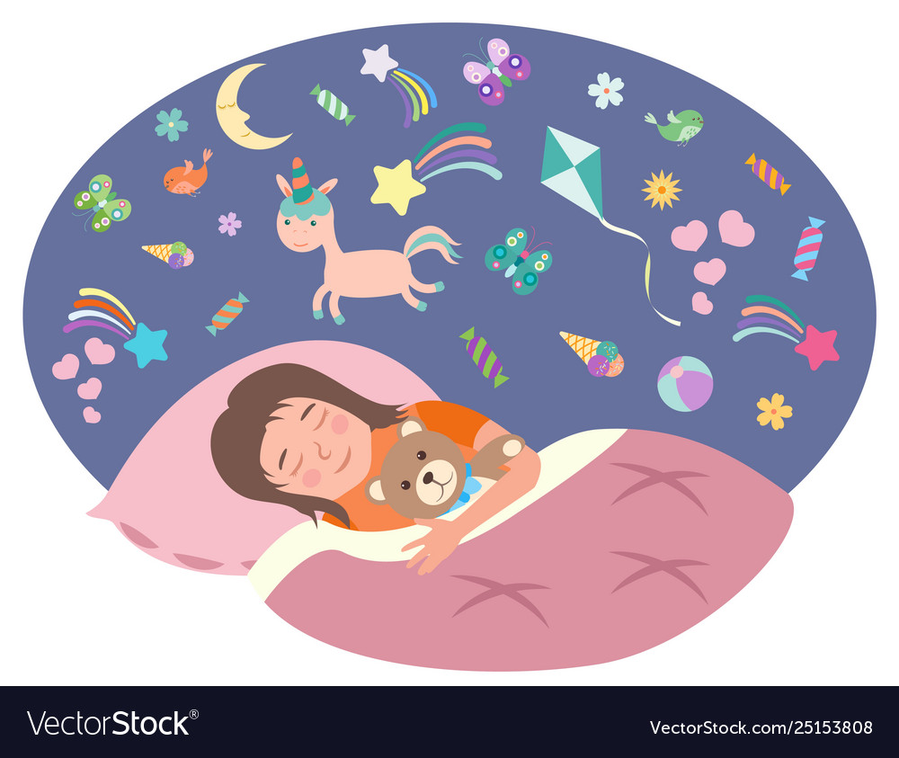

Eggs!

Description
Dreams of the innocent! Want to fill that empty hole in your heart with something other then negativity? Try childrens hopes and dreams! Their never ending positivity will make you feel temporarily happy!
Ingredients
- Innocent Child (3-12 best age for harvest)
- Straw
- Hot Sauce
- A Empty Soul
Everything Ready? Ok lets begin!
Steps
- Take child
- Insert straw
- Start SLURPING!
- Add some hot sauce for extra flavor
- You'll know they're tapped once they're eyes no longer have a sparkle and are just as dead as yours.
- discard
- Enjoy!
Return to main page